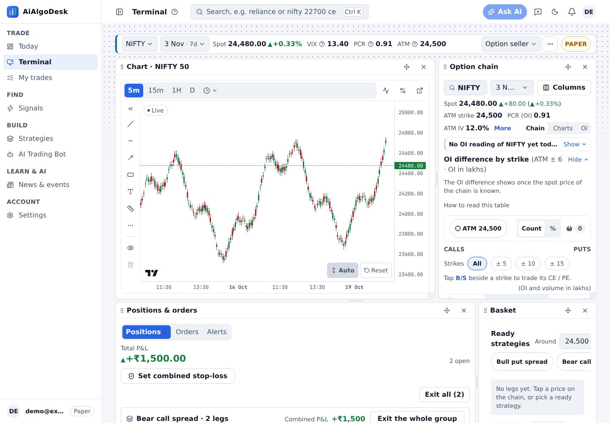
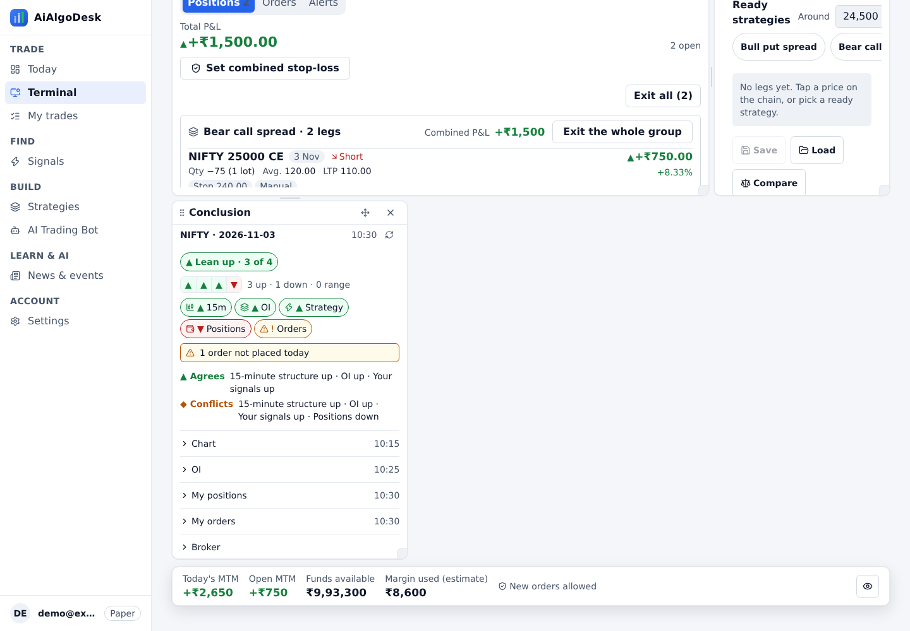
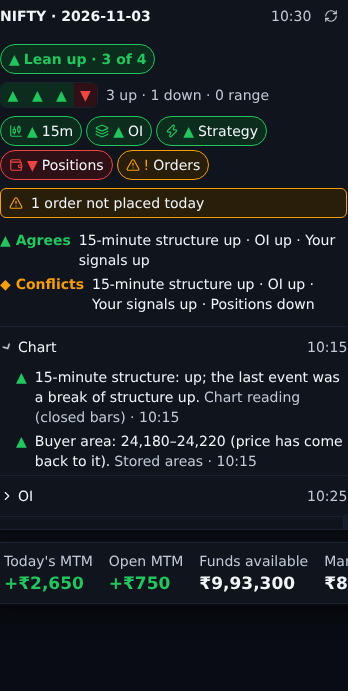
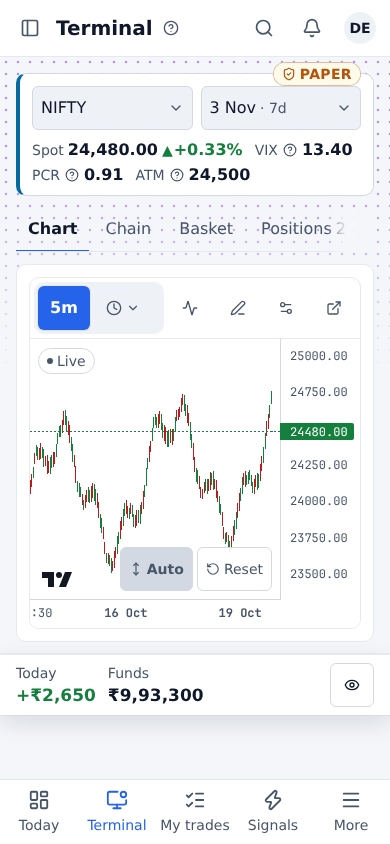
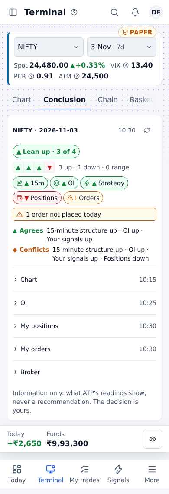
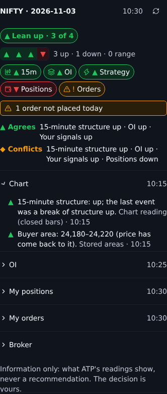
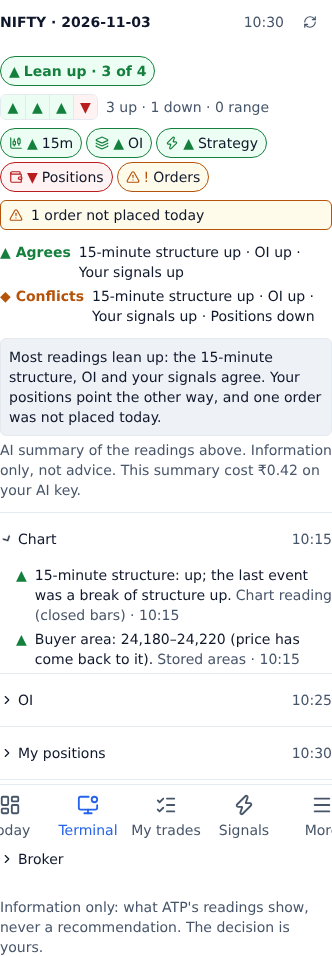

TERM-CON: the Terminal's Conclusion panel
One panel for the Terminal's symbol + expiry. The lean cue, meter and chips are read in one glance. The words underneath are structure words only. It has no order button.
| Item | Before (flag off) | After (flag on) |
|---|---|---|
| Chart, OI, his signals, positions, orders, broker in one place | spread over 8 pages / panels | one panel, each line with source and time |
| Glance cue | - | ▲ / ▼ / ◆ + "Lean" + count (chip-sized, TC-Q5), meter with glyphs, one chip per source |
| What agrees / conflicts | - | listed by source, counts only (no score) |
| Needs you | - | refused order, broker check, new orders stopped, expiry today |
| Desktop | - | opens on Option seller / Quick trade below the open panels; Panels menu elsewhere |
| Phone 390 | - | "Conclusion" tab after Chart; no sideways scroll (phone guard) |
| AI summary | - | only on tap; his own key; only the read's facts; no advice / call words (refused twice = none); cost shown |
| Flag off | no panel, no tab, no read sent (tested) | |
Desktop 1440 (light)


The panel (desktop dark, Chart section opened)

Phone 390



C4: "Summarise with AI" (on tap, his own key, cost shown)
